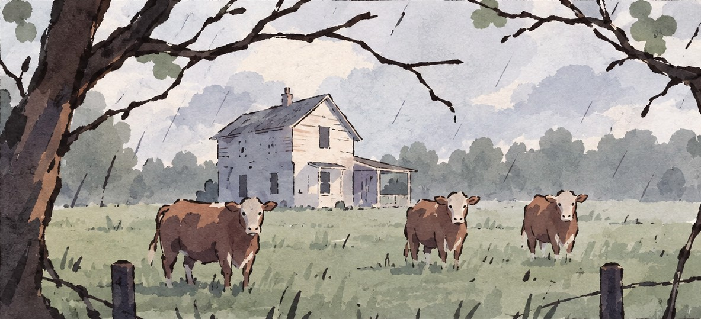

Lo que no abres a tiempo termina encerrándote.
Un estudiante de 22 años, atrapado en la crisis de los veinte, empieza a escuchar a alguien que golpea detrás de cada puerta que cierra y le suplica que abra. Él decide no abrir ninguna.
OCUPADO habla de la crisis de los veinte: esa edad en la que se acaba el camino trazado y todos esperan que ya sepas quién eres. Cada puerta que Leo no abre es una decisión aplazada, ya sea qué estudiar, en qué trabajar, irse de casa o decir lo que quiere. Elegir una puerta es cerrar las demás, y por eso no abre ninguna.
El corto no explica esa parálisis: la convierte en suspenso. Golpes que nadie más escucha, papeles bajo la puerta y una casa que se vuelve cada vez más pequeña.
«Pensé que eso era crecer: que las cosas se van si uno no les abre».
El corto se dibuja en 2D con tinta de pincel y acuarela. La línea es negra, gruesa y quebrada, y no siempre cierra los contornos. El color va en manchas planas que dividen la luz en dos o tres zonas, sin degradados.
La luz es el papel sin pintar y las sombras son índigo, nunca negro plano. Hay poco detalle a propósito: en los planos generales todo se sugiere con pocas líneas, y las puertas se dibujan con más cuidado que las personas.
El encuadre se estrecha en cada acto, de 1.85:1 a 1.33:1, para que el encierro también se sienta en la pantalla.
Guían el escenario, la luz y el encuadre. Los personajes y el acabado siguen el estilo animado.
| Parte | Qué pasa | Duración |
|---|---|---|
| Total | 112 planos | 9:39 |
| Nivel | Cómo se hace | Planos |
|---|
| Fase | Contenido | Horas |
|---|---|---|
| Total | Una persona, estimado | unas 600 |
El primer entregable es un tráiler de 68 segundos con 21 planos que irán tal cual en el corto.